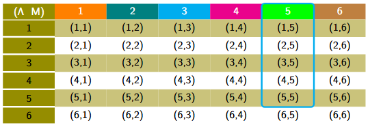
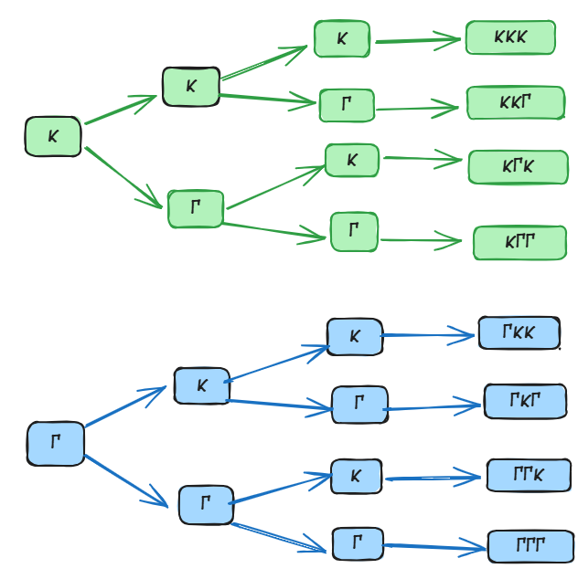
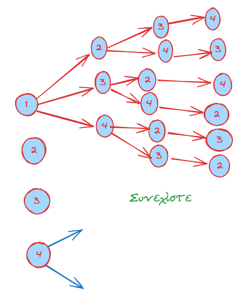

1 Δειγματικός χώρος - Ενδεχόμενα
1.1 Θεωρία
Η θεωρία των πιθανοτήτων ασχολείται με τη μελέτη φαινομένων στα οποία η τελική έκβαση χαρακτηρίζεται από αβεβαιότητα.
Οι βασικές έννοιες του δειγματικού χώρου και των ενδεχομένων είναι:
1.2 1. Πείραμα Τύχης
Ως πείραμα τύχης ορίζεται κάθε πείραμα το οποίο, αν και μπορεί να επαναληφθεί όσες φορές θέλουμε υπό τις ίδιες ακριβώς συνθήκες, το αποτέλεσμά του δεν μπορεί να προβλεφθεί με ακρίβεια.
- Παραδείγματα: Η ρίψη ενός νομίσματος, η ρίψη ενός ζαριού ή η επιλογή ενός χαρτιού από μια τράπουλα.
1.3 2. Δειγματικός Χώρος (Ω)
Δειγματικός χώρος ενός πειράματος τύχης ονομάζεται το σύνολο που έχει ως στοιχεία όλα τα δυνατά αποτελέσματά του. Συμβολίζεται συνήθως με το γράμμα Ω. Τα στοιχεία του δειγματικού χώρου ονομάζονται δυνατές περιπτώσεις ή στοιχειώδη γεγονότα (ή δείγματα).
- Παραδείγματα:
- Ρίψη ενός νομίσματος: \(\Omega = \{Κ, Γ\}\), όπου Κ = κεφαλή και Γ = γράμματα.
- Ρίψη ενός ζαριού: \(\Omega = \{1, 2, 3, 4, 5, 6\}\).
- Ρίψη νομίσματος δύο φορές: \(\Omega = \{KK, K\Gamma, \Gamma K, \Gamma\Gamma\}\).
- Ρίψη δύο κύβων (λευκού και μαύρου): Ο δειγματικός χώρος αποτελείται από 36 διατεταγμένα ζεύγη (α, β), όπου α η ένδειξη του λευκού και β του μαύρου κύβου.

1.4 3. Ενδεχόμενα (ή Γεγονότα)
Ενδεχόμενο ή γεγονός ονομάζεται κάθε υποσύνολο του δειγματικού χώρου Ω. Ένα ενδεχόμενο πραγματοποιείται όταν το αποτέλεσμα του πειράματος είναι ένα από τα στοιχεία που περιλαμβάνονται σε αυτό το υποσύνολο.
* Είδη Ενδεχομένων:
Στοιχειώδες (ή απλό) ενδεχόμενο: Υποσύνολο που περιέχει μόνο ένα στοιχείο του Ω.
Σύνθετο ενδεχόμενο: Υποσύνολο που αποτελείται από περισσότερα στοιχεία (ένωση στοιχειωδών γεγονότων).
Βέβαιο ενδεχόμενο: Το ίδιο το σύνολο Ω (π.χ. στη ρίψη ζαριού, η ένδειξη να είναι \(\le 6\)).
Αδύνατο ενδεχόμενο: Το κενό σύνολο \(\emptyset\) (π.χ. στη ρίψη ζαριού, η ένδειξη να είναι \(> 6\)).
1.5 4. Σχέσεις μεταξύ Ενδεχομένων
- Αντίθετα ενδεχόμενα: Δύο ενδεχόμενα Α και Α’ (ή \(\bar{A}\)) ονομάζονται αντίθετα όταν το ένα είναι το συμπλήρωμα του άλλου ως προς τον δειγματικό χώρο Ω. Η ένωσή τους δίνει το βέβαιο γεγονός.
Στο πείραμα τύχης «ρίψη ενός ζαριού» με δειγματικό χώρο Ω={1,2,3,4,5,6}: Αν το ενδεχόμενο A είναι «η ένδειξη είναι μικρότερη του 4», δηλαδή A={1,2,3}. Τότε το συμπλήρωμα (αντίθετο) ενδεχόμενο A′ είναι «η ένδειξη είναι μεγαλύτερη ή ίση του 4», δηλαδή A′ ={4,5,6}
- Ασυμβίβαστα (ή ξένα) ενδεχόμενα: Ενδεχόμενα που δεν έχουν κοινά στοιχεία (\(A \cap B = \emptyset\)). Η πραγματοποίηση του ενός αποκλείει την πραγματοποίηση του άλλου.
Στη γλώσσα των συνόλων, αυτό σημαίνει ότι τα ενδεχόμενα αυτά δεν έχουν κοινά στοιχεία (είναι ξένα σύνολα), δηλαδή η τομή τους είναι το κενό σύνολο (A∩B=∅) . Δύο αντίθετα ενδεχόμενα είναι πάντοτε ασυμβίβαστα μεταξύ τους
Τομή ενδεχομένων (\(A \cap B\)): Το ενδεχόμενο που πραγματοποιείται όταν συμβαίνουν ταυτόχρονα και τα δύο ενδεχόμενα Α και Β.
Ένωση ενδεχομένων (\(A \cup B\)): Το ενδεχόμενο που πραγματοποιείται όταν συμβαίνει τουλάχιστον ένα από τα Α ή Β.
Άθροισμα ενδεχομένων (\(A + B\)): Χρησιμοποιείται όταν τα ενδεχόμενα είναι ασυμβίβαστα και δηλώνει την ένωσή τους.
Διαφορά μεταξύ ανεξάρτητων και ασυμβίβαστων ενδεχομένων
- Ανεξάρτητα Ενδεχόμενα
Ορισμός: Δύο ενδεχόμενα ονομάζονται ανεξάρτητα όταν η πραγματοποίηση του ενός δεν επηρεάζει την πιθανότητα πραγματοποίησης του άλλου.
Πιθανότητα: Δύο ενδεχόμενα είναι ανεξάρτητα αν και μόνο αν η πιθανότητα της τομής τους (να συμβούν και τα δύο) ισούται με το γινόμενο των πιθανοτήτων τους: P(A∩B)=P(A)⋅P(B)
\[\bbox[yellow, 5px]{\color{blue}\Large\text{Για την πιθανότητα θα μιλήσουμε στην συνέχεια}}\]
Παράδειγμα: Αν ρίξουμε ένα ζάρι δύο φορές, το αποτέλεσμα της πρώτης ρίψης δεν επηρεάζει την πιθανότητα εμφάνισης ενός αριθμού στη δεύτερη ρίψη
Η Κύρια Διαφορά
Η βασική διαφορά έγκειται στο εξής: Τα ασυμβίβαστα ενδεχόμενα δεν είναι ανεξάρτητα.
Ενώ τα ανεξάρτητα ενδεχόμενα «δεν ενδιαφέρονται» για το αν συνέβη το άλλο, στα ασυμβίβαστα ενδεχόμενα η πραγματοποίηση του ενός επηρεάζει άμεσα το άλλο, καθώς εκμηδενίζει την πιθανότητα να συμβεί.
Δηλαδή, αν γνωρίζουμε ότι πραγματοποιήθηκε το A, η πιθανότητα να συμβεί το B (που είναι ασυμβίβαστο με το A) γίνεται αυτόματα μηδέν.
Συνοπτικά:
Τα ασυμβίβαστα ενδεχόμενα σχετίζονται με την απουσία κοινών αποτελεσμάτων (A∩B=∅).
Τα ανεξάρτητα ενδεχόμενα σχετίζονται με τη μη επίδραση στην πιθανότητα εμφάνισης
1.6 5. Συμπληρωματικά Παραδείγματα
- Ρίψη ζαριού: Έστω το ενδεχόμενο \(A = \{1, 3, 5\}\) (περιττή ένδειξη). Οι ευνοϊκές περιπτώσεις είναι 3 (τα στοιχεία 1, 3, 5) και οι δυνατές περιπτώσεις είναι 6. Η πιθανότητα είναι \(P(A) = 3/6 = 1/2\).
- Οικογένεια με τρία παιδιά: Ο δειγματικός χώρος περιλαμβάνει 8 στοιχεία: \(\{AAA, AAΚ, AKA, AΚΚ, ΚΑΑ, ΚΑΚ, ΚΚΑ, ΚΚΚ\}\), όπου Α = αγόρι και Κ = κορίτσι.
- Κληρωτίδα με 10 κλήρους (1-10): Το ενδεχόμενο “αριθμός μικρότερος του 4” είναι το \(\{1, 2, 3\}\). Η πιθανότητά του είναι \(3/10 = 0,3\).
- Ανεξάρτητα ενδεχόμενα: Αν ρίξουμε ένα νόμισμα και ένα ζάρι, το αποτέλεσμα της ρίψης του νομίσματος δεν επηρεάζει το αποτέλεσμα του ζαριού. Πρόκειται για ανεξάρτητα πειράματα και γεγονότα.
1.7 Το δενδροδιάγραμμα
είναι μια γραφική μέθοδος που μας επιτρέπει να βρίσκουμε συστηματικά όλα τα δυνατά αποτελέσματα (δηλαδή τον δειγματικό χώρο \(\Omega\)) ενός πειράματος τύχης, ιδιαίτερα όταν αυτό εκτελείται σε διαδοχικά στάδια.
1. Διαδικασία Κατασκευής
Πρώτο Στάδιο: Ξεκινάμε από ένα αρχικό σημείο και χαράζουμε τόσες διακλαδώσεις (βέλη) όσα είναι τα δυνατά αποτελέσματα του πρώτου σταδίου του πειράματος.
Επόμενα Στάδια: Από το τέλος κάθε διακλάδωσης του προηγούμενου σταδίου, χαράζουμε νέες διακλαδώσεις που αντιστοιχούν στα δυνατά αποτελέσματα του επόμενου σταδίου.
Τελικά Αποτελέσματα: Κάθε πλήρης διαδρομή από την αρχή του «δένδρου» μέχρι το τελευταίο άκρο του αντιπροσωπεύει ένα στοιχείο (δείγμα) του δειγματικού χώρου.
2. Παραδείγματα
Α. Ρίψη νομίσματος τρεις φορές Όπως δείχνει το αντίστοιχο δενδροδιάγραμμα η ρίψη ενός νομίσματος (Κ=Κεφαλή, Γ=Γράμματα):
1η ρίψη: Έχουμε δύο κλάδους, Κ και Γ.
2η ρίψη: Από το Κ ξεκινούν δύο νέοι κλάδοι (Κ, Γ) και από το Γ άλλοι δύο (Κ, Γ). Τα αποτελέσματα είναι: ΚΚ, ΚΓ, ΓΚ, ΓΓ.
3η ρίψη: Η διαδικασία επαναλαμβάνεται για κάθε αποτέλεσμα της 2ης ρίψης.
Δειγματικός Χώρος: \(\Omega = \{ΚΚΚ, ΚΚΓ, ΚΓΚ, ΚΓΓ, ΓΚΚ, ΓΚΓ, ΓΓΚ, ΓΓΓ\}\). Συνολικά 8 δυνατές περιπτώσεις.

Β. Επιλογή σφαιρών από κιβώτιο Έστω ένα κιβώτιο που περιέχει 4 σφαίρες αριθμημένες από το 1 έως το 4. Αν παίρνουμε διαδοχικά σφαίρες χωρίς επανάθεση:
Πείραμα 1 (\(\Pi_1\)): Επιλογή μίας σφαίρας. Το δενδροδιάγραμμα έχει 4 κλάδους: 1, 2, 3, 4.
Πείραμα 2 (\(\Pi_2\)): Διαδοχική επιλογή δύο σφαιρών. Από τον κλάδο «1» του πρώτου σταδίου, ξεκινούν οι κλάδοι 2, 3, 4 (αφού η σφαίρα 1 έχει ήδη βγει).
Τα αποτελέσματα αυτού του κλάδου θα είναι: (1,2), (1,3), (1,4).
Ακολουθώντας την ίδια λογική για όλους τους αρχικούς κλάδους, προκύπτει ο δειγματικός χώρος.

3. Χρησιμότητα Το δενδροδιάγραμμα είναι ιδιαίτερα χρήσιμο γιατί:
Εξασφαλίζει ότι δεν θα ξεχάσουμε κάποιο αποτέλεσμα κατά την απαρίθμηση.
Βοηθά στον υπολογισμό του πλήθους των δυνατών περιπτώσεων (\(\rho\)), ο οποίος είναι απαραίτητος για την εύρεση της πιθανότητας \(P(A) = \frac{\kappa}{\rho}\).
1.8 Ασκήσεις
- Ποιο από τα παρακάτω είναι πείραμα τύχης:
- α) Ρίχνω ένα κέρμα και καταγράφω την όψη που έρχεται.
- β) Μετράω τη θερμοκρασία του νερού που βράζει σε μια κατσαρόλα.
- γ) Επιλέγω έναν μαθητή από το τμήμα μου και καταγράφω αν έχει μπλε μάτια.
- δ) Αφήνω μια πέτρα να πέσει από το μπαλκόνι και προβλέπω ότι θα πέσει προς τα κάτω.
Επιλέγουμε διαδοχικά δύο μαθητές από ένα τμήμα με 3 μαθητές (Α, Β, Γ) και καταγράφουμε το φύλο τους (Α: Αγόρι, Κ: Κορίτσι). Αν ο πρώτος μαθητής είναι Αγόρι και ο δεύτερος Κορίτσι, ποιος είναι ο σωστός τρόπος να συμβολιστεί το αποτέλεσμα σε έναν πίνακα διπλής εισόδου;
Ένας μαθητής θέλει να σχηματίσει τριψήφιους αριθμούς χρησιμοποιώντας τα ψηφία 1, 4, 6 χωρίς επανάληψη. Μπορείτε να σχεδιάσετε το δενδροδιάγραμμα που απεικονίζει όλους τους δυνατούς συνδυασμούς;
Αν ο δειγματικός χώρος ενός πειράματος τύχης είναι \(\Omega = \{1, 3, 5, 7, 9\}\), ποιο από τα παρακάτω σύνολα είναι ενδεχόμενο του πειράματος:
- α) \(A = \{1, 2, 3\}\)
- β) \(B = \{3, 7, 9\}\)
- γ) \(\Gamma = \{0, 5\}\)
- δ) \(\Delta = \{1, 3, 5, 7, 9, 11\}\)
- Ρίχνουμε ένα ζάρι και φέρνουμε 4. Ποιο από τα παρακάτω ενδεχόμενα πραγματοποιείται:
- α) \(A = \{1, 2, 4\}\)
- β) \(B = \{1, 3, 5\}\)
- γ) \(\Gamma = \{4, 5, 6\}\)
- δ) \(\Delta = \{2, 4, 6\}\)
- Ένα κουτί περιέχει μπλε, κόκκινες και πράσινες μπάλες. Αν επιλέξω μία μπάλα, ποιο από τα παρακάτω ενδεχόμενα είναι αδύνατο:
- α) Η μπάλα είναι μπλε.
- β) Η μπάλα είναι κίτρινη.
- γ) Η μπάλα είναι κόκκινη.
- δ) Η μπάλα δεν είναι πράσινη.
- Επιλέγω στην τύχη μία ημέρα της εβδομάδας. Ποιο από τα παρακάτω ενδεχόμενα είναι βέβαιο:
- α) Η ημέρα είναι Σαββατοκύριακο.
- β) Η ημέρα έχει το γράμμα “α” στο όνομά της.
- γ) Η ημέρα είναι καθημερινή (Δευτέρα έως Παρασκευή).
- δ) Η ημέρα ανήκει στις 7 ημέρες της εβδομάδας.
- Να συμπληρώσετε τον παρακάτω πίνακα αντιστοιχίζοντας σε κάθε ενδεχόμενο της στήλης (Α) το σωστό συμπέρασμα από τη στήλη (Β).
| Στήλη Α | Στήλη Β |
|---|---|
| α. \(A \cup B\) | 1. Πραγματοποιούνται όλα τα στοιχεία που δεν ανήκουν στο Α. |
| β. \(A \cap B\) | 2. Πραγματοποιείται τουλάχιστον ένα από τα Α, Β. |
| γ. \(A'\) | 3. Πραγματοποιούνται ταυτόχρονα και το Α και το Β. |
Σε μια καφετέρια προσφέρονται 3 είδη καφέ (Espresso, Cappuccino, Freddo) και 2 είδη συνοδευτικών (Κρουασάν, Μπάρα δημητριακών). Επιλέγουμε στην τύχη έναν πελάτη που αγόρασε ένα είδος καφέ και ένα είδος συνοδευτικού. Ποιος είναι ο δειγματικός χώρος του πειράματος;
Ρίχνουμε ένα ζάρι δύο φορές. Ποιος είναι ο δειγματικός χώρος του πειράματος;
Σε ένα τουρνουά σκάκι συμμετέχουν 3 παίκτες (Άρης, Βασίλης, Γιώργος). Κάθε παίκτης παίζει με κάθε άλλον μία παρτίδα. Χρησιμοποιήστε έναν πίνακα για να βρείτε όλα τα πιθανά ζευγάρια αντιπάλων.
Σε μια τσάντα υπάρχουν 4 στυλό: ένα μαύρο, ένα κόκκινο, ένα πράσινο και ένα μπλε. Επιλέγουμε τυχαία ένα στυλό.
- α) Με πόσες το πολύ κινήσεις είμαστε σίγουροι ότι θα πάρουμε το μπλε στυλό;
- β) Με πόσες κινήσεις μπορούμε να αναγνωρίσουμε το χρώμα όλων των στυλό της τσάντας;
- γ) Θεωρήστε την πρώτη κίνηση ως ξεχωριστό πείραμα.Ποιος είναι ο δειγματικός του χώρος;
- Σε μια σχολική γιορτή συμμετέχουν 3 αγόρια (Νίκος, Φάνης, Αλέξανδρος) και 2 κορίτσια (Μαρία, Ελένη). Επιλέγουμε στην τύχη ένα αγόρι και ένα κορίτσι για να χορέψουν μαζί. Να προσδιορίσετε:
- α) Τον δειγματικό χώρο του πειράματος.
- β) Τα ενδεχόμενα: Α: Διαγωνίστηκε η Μαρία. Β: Δεν διαγωνίστηκε ο Νίκος.
- Ο δειγματικός χώρος ενός πειράματος τύχης είναι \(\Omega = \{1, 2, 3, 4, 5, 6, 7, 8\}\).
Να παραστήσετε με διάγραμμα Venn τα ενδεχόμενα \(A = \{x \in \Omega, \text{όπου } x \text{ άρτιος}\}\) και \(B = \{x \in \Omega, \text{όπου } x > 5\}\) και να βρείτε τα ενδεχόμενα:
- α) Πραγματοποιείται τουλάχιστον ένα από τα Α, Β.
- β) Πραγματοποιούνται ταυτόχρονα τα Α και Β.
- γ) Δεν πραγματοποιείται το Α.
- Ένας κωδικός χρηματοκιβωτίου αποτελείται από 3 ψηφία. Το πρώτο ψηφίο είναι 5, το δεύτερο ψηφίο είναι 1 ή 2 και το τρίτο ψηφίο είναι 8, 9 ή 0.
- α) Ποιο είναι το σύνολο των πιθανών κωδικών;
- β) Να προσδιορίσετε τα ενδεχόμενα: Α: Το δεύτερο ψηφίο είναι 2. Β: Το τρίτο ψηφίο είναι 8.
\[\bbox[yellow, 5px]{\color{blue}\Large\text{---}}\]
ΚΑΛΗ ΜΕΛΕΤΗ!